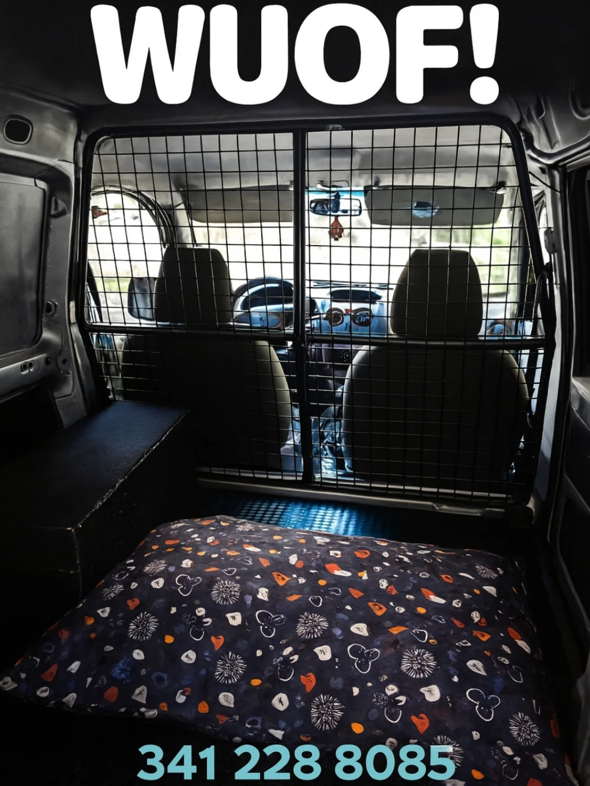
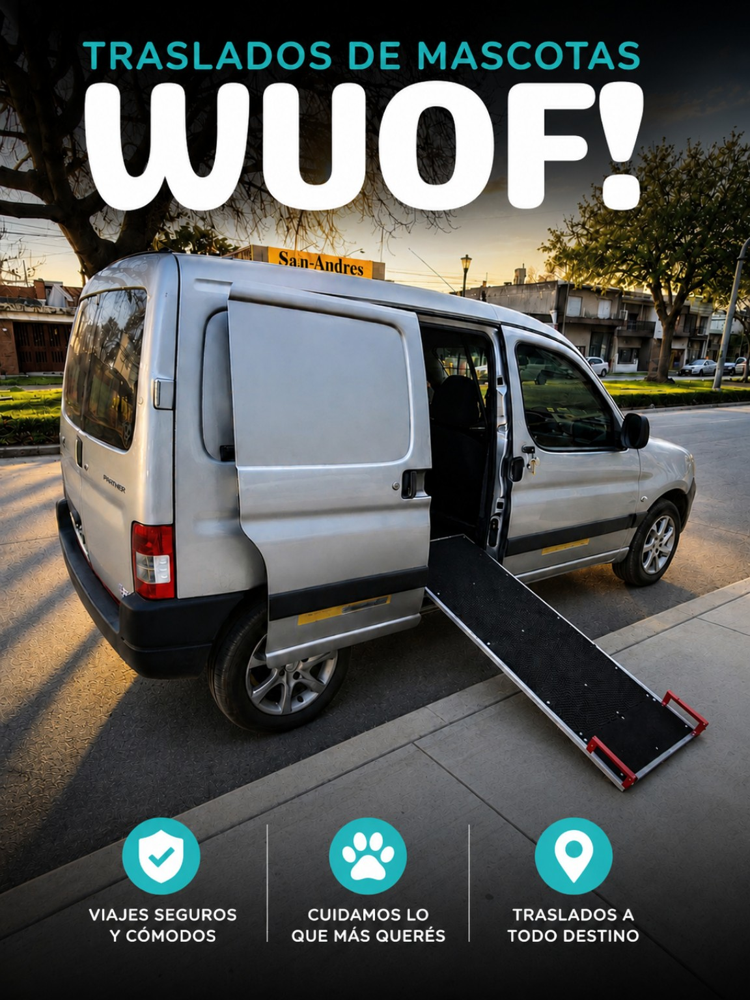

VETERINARIAS
Consultas, controles y atención veterinaria.
TRASLADOS DE MASCOTAS
Traslados cómodos y seguros en Rosario y Gran Rosario, con vehículo adaptado y atención personalizada.
RESERVAR POR WHATSAPPTRANSPORTE ESPECIALIZADO
WUOF nació para una necesidad concreta: que tu mascota pueda viajar con espacio, comodidad y atención, sin depender de un vehículo convencional.

VEHÍCULO ADAPTADO
¿A DÓNDE VAMOS?
Consultas, controles y atención veterinaria.
Rehabilitación, estudios y controles programados.
Especial cuidado para mascotas mayores, lesionadas o en recuperación.
Consultanos por el destino y la necesidad particular de tu mascota.
WUOF EN MOVIMIENTO



ACCESIBILIDAD
Contamos con rampa de acceso para situaciones en las que la movilidad necesita un cuidado especial.
SIMPLE Y PERSONALIZADO
Contanos qué mascota viaja, desde dónde y hacia qué destino.
Definimos día, horario y necesidades particulares.
Llegamos con nuestro vehículo preparado y realizamos el traslado.
PREGUNTAS FRECUENTES
Escribinos por WhatsApp indicando origen, destino, día, horario y qué mascota viaja.
Sí. Coordinamos previamente las necesidades particulares de cada mascota.
Sí. Realizamos traslados en Rosario y Gran Rosario. Para otros destinos, consultanos.
Sí. Siempre que sea posible, recomendamos coordinar previamente para asegurar disponibilidad.
ROSARIO
Contanos qué necesitás y coordinamos el viaje.
HABLAR CON WUOF 341 228 8085